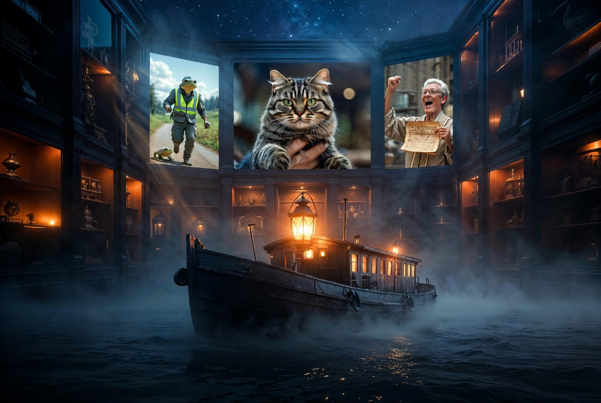
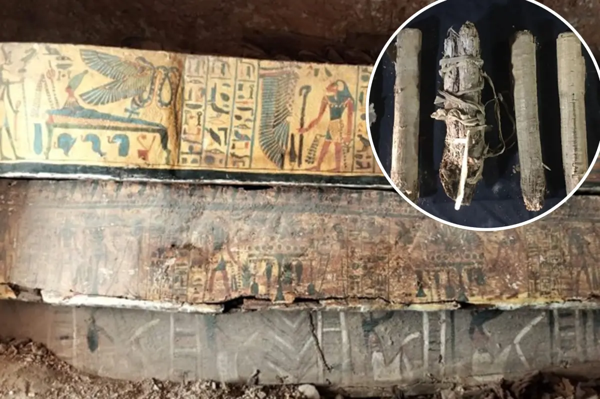

April 10, 2026 • Drifting Barges, Lost Pets, Frog Patrols, and Ancient Secrets
A daily cabinet of curiosities. Each object is examined not merely as fact, but as portal — into history’s unfinished conversations, nature’s quiet resilience, and humanity’s restless ingenuity.
View Past Editions →A large unmanned barge broke loose and floated down a Michigan river, colliding with two bridges before authorities could stop it.
Further analysis: This incident highlights vulnerabilities in inland waterway infrastructure and the unpredictable consequences of mechanical failure in modern logistics.
Further Research
A Texas family was joyfully reunited with their beloved cat that had been missing for five full years.
Further analysis: This heartwarming story underscores the resilience of pets and the power of microchipping and community networks in lost-pet recovery.
Further Research
Volunteers in Poland have created a “Frog Patrol” to safely escort amphibians across dangerous roads during spring migration.
Further analysis: This grassroots conservation effort demonstrates how local communities can directly mitigate human impact on wildlife migration corridors.
Further Research
A Maryland woman hit the jackpot for the second time in 14 years, winning another large lottery prize.
Further analysis: This rare double-win raises fascinating questions about probability, luck, and the psychology of sudden wealth.
Further Research

Archaeologists in Egypt recently uncovered eight rare papyrus scrolls, some still bearing intact 3,000-year-old clay seals, alongside a cache of colorful coffins from the Third Intermediate Period (1070–664 BCE).1
The scrolls, found in a large pottery vessel, are expected to yield new insights into temple rituals, administrative records, and daily life during a turbulent era of Egyptian history. Many remain unopened, preserving their secrets for modern non-invasive scanning techniques.2
This discovery is particularly significant because few papyri from this period have survived with seals intact. Initial examinations suggest they may contain previously unknown hymns, economic records, or priestly decrees.3
The edge case here is profound: these scrolls existed for three millennia in total darkness, sealed and unread. What other “time capsules” of ancient knowledge still lie waiting beneath the sand?
Footnotes & References